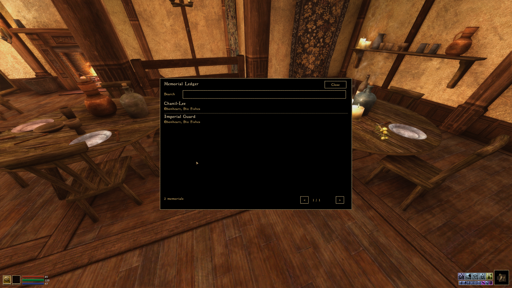
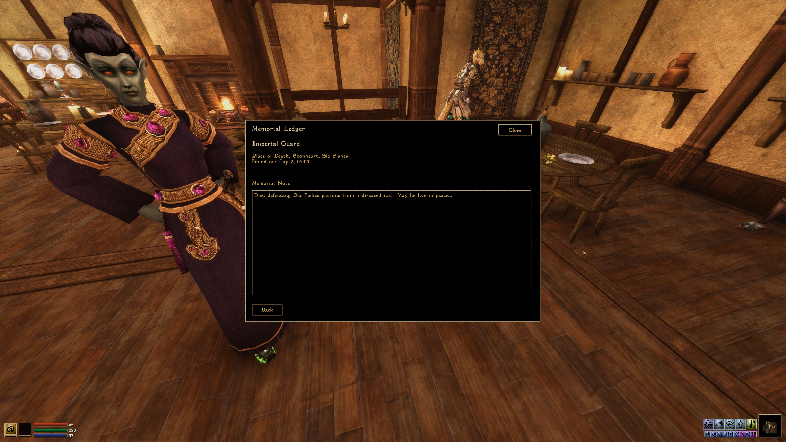
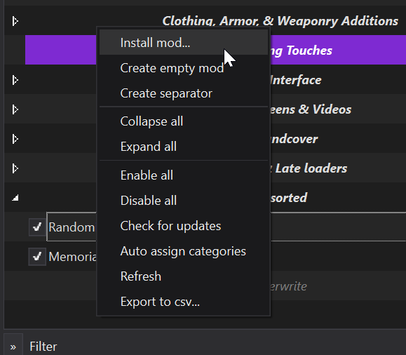
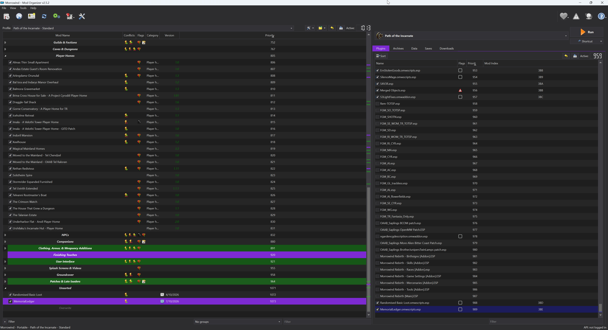
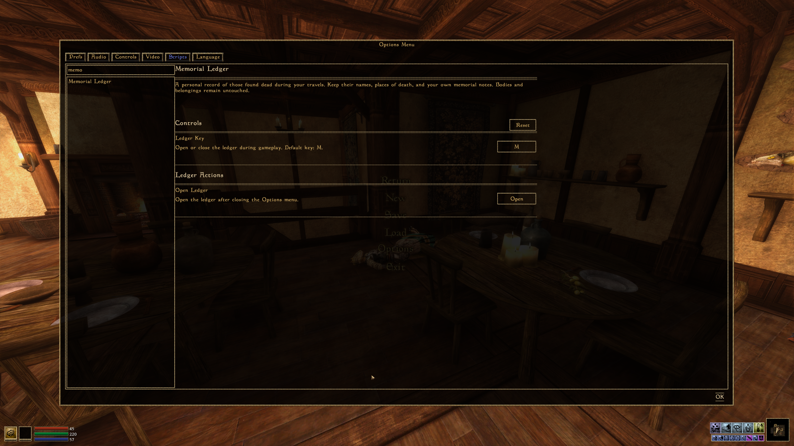

In-Game Behavior
Dead NPCs in active cells are recorded passively, without touching or looting them. The mod never removes bodies, reads inventories, adds corpse interaction prompts, or changes vanilla corpse behavior. All interaction happens in the ledger panel.


Default key: M. Settings: Options > Scripts > Memorial Ledger. Existing custom bindings are preserved. Search by NPC name using case-insensitive partial matching; page through entries; select a row to read Place of Death and Found on, or write a Memorial Note. Notes save on Back or Close, without a Save Note button.
Names, locations, first-observed times, and notes persist per save. Places display names or regions without grid coordinates, including entries from older saves. The mod does not assume you killed an NPC or that first observation was the time of death. Creatures and players are excluded.
Memorial Entries
The panel presents names, locations, discovery dates, and personal notes. Technical status labels, reference IDs, and the state-filter dropdown have been removed. Entries remain when bodies disappear or their cells unload.
No Keep body control, cleanup timer, or safety-bypass option exists. Vanilla OpenMW and other mods retain responsibility for corpse disposal.
Install
Use the import-ready ZIP attached to a GitHub release when available, or run the packaging tool from a source checkout. Full documentation
Targets OpenMW builds with MWUI, Settings, UI, and input-binding APIs, developed against current 0.52 development documentation. NPC persistence flags are no longer required. Classic Morrowind/MWSE is unsupported.
Standalone OpenMW
Close OpenMW, extract the mod ZIP to its own directory, and add the following to your active profile's openmw.cfg. Keep existing data/content entries and adjust the example path. Enable the manifest in the content list, restart, load a game, and press M.
data="D:/Games/OpenMW/Mods/MemorialLedger"
content=MemorialLedger.omwscriptsMorrowind In Mod Organizer 2
- Right-click the left-hand mod list and choose Install mod....
- In Choose Mod, select the latest MemorialLedger ZIP, click Open, and finish installation.
- Tick MemorialLedger in the left-hand list.
- Tick MemorialLedger.omwscripts.esp in the right-hand Plugins tab. Your OpenMW integration generates this placeholder automatically; it enables the real .omwscripts file.
- Run the profile's configured OpenMW executable, load a game, and press M.


Do not create an ESP manually. If no placeholder appears, check Dummy ESP in OpenMW Player's Options. With an exporter, verify the exported data path and content entry. Launch OpenMW, not Morrowind.exe.
The original Morrowind engine cannot run this mod. If the settings page is missing, check the active profile's data/content entries and openmw.log. If M does not open the ledger, check Controls > Ledger Key or use Ledger Actions > Open.
Updating from 0.1.0 preserves entries and notes but stops pending cleanup and removes body controls. Bodies already removed by the old version cannot be restored by updating. No installed profiles or saves have been modified by this build.
Settings
Controls contains Ledger Key, its description, and a right-aligned binding button. Reset restores M; Escape cancels recording and Delete/Backspace clears the binding. Ledger Actions contains the separate Open command, which opens the ledger after Options closes. Descriptions are retained and the binding label is not duplicated.

Verification
Eighteen tests execute real Lua 5.1 with API doubles that forbid inventory access and deletion. Checks include clean place names for new and older entries, default M binding, preserving user bindings, note persistence, name search, reference tracking, save migration, both panel layouts, compact resizing, Menu-context settings registration, rebinding, cancellation, clearing, resetting, and Open action dispatch.
The supplied screenshots demonstrate native UI rendering. Broader input, save/load, and reference serialization checks still need the in-game acceptance checklist. Test on a disposable save first.